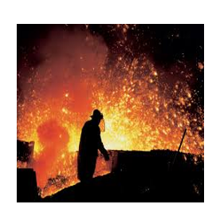
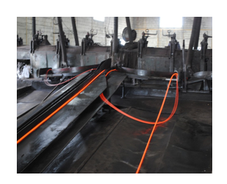
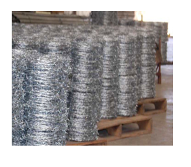
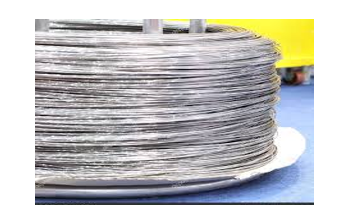

951-570-00-28 / 951-182-00-37 / 951-518-83-30.
CRUCERO A TOCUELA S/N. COL. LA MOJONERA. SAN ANTONINO CASTILLO VELASCO, OAXACA. C.P. 71520.
951-570-00-28 / 951-182-00-37 / 951-518-83-30.
CRUCERO A TOCUELA S/N. COL. LA MOJONERA. SAN ANTONINO CASTILLO VELASCO, OAXACA. C.P. 71520.
Minerales de Antequera.
|  |  |
|---|---|
|  |  |